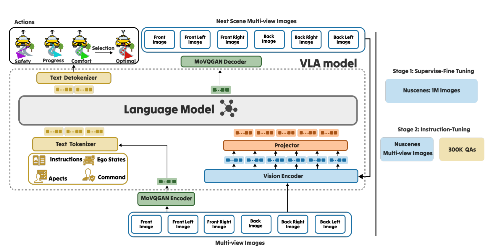

Summary
针对传统驾驶 VLA 的两个痛点——① 用 image-to-text + 文本 CoT 推理，把连续高维的视觉场景离散成文本符号，损失空间信息（modality gap）；② 只预测单条 waypoint 序列、同时兼顾多维度，缺乏逐维度的 deliberation——HybridDriveVLA 把推理整体搬到视觉域：用 Visual Chain-of-Thought（V-CoT）自回归预测未来场景图作为 goal，再用 Tree-of-Thought-inspired 的 waypoint 评估（ToT-Evaluation）生成并逐点打分 条候选序列，按 safety / progress / comfort 三轴累计分选出最优。方法基于 Qwen2-VL-2B，经 SFT（视觉下一场景生成）+ Instruction Tuning（LoRA）两阶段训练，在 nuScenes 开环上报告平均碰撞率 0.17%（ST-P3）/ 0.19%（UniAD），在 NAVSIM 上 Optimal 轨迹 PDMS 94.62。论文自称是首个在 VLA 中统一 CoT 与 ToT 的方法。
Problem & Motivation
- 文本 CoT 引入 modality gap：传统 driving VLA 依赖 image-to-text + CoT，把连续、高维的视觉数据离散为文本表示；这种语言抽象不可避免地退化视觉中的空间信息，而对精度至关重要的正是这部分空间信息。
- 单条轨迹缺乏逐维度 deliberation：现有 VLA 同时考虑多个维度、却只输出一条”统计上最可能”的 waypoint 序列，缺少对 safety / progress / comfort 各维度的显式评估与权衡。
- 不确定 / 多智能体场景下的失效：单条统计最优序列在需要精确、灵活决策的复杂场景中，容易预测出不安全、不舒适或不前进的 waypoints。
- 动机（mimic 人类司机）：让推理完全发生在视觉域（保留空间连续性与可解释性），并把”评价”显式拆解到多个维度——像人类司机一样对不同未来位置的 safety / progress / comfort 做权衡后选最优轨迹。
Method
0) Backbone
- 基于预训练
Qwen2-VL-2B，由 vision encoder + projector + text tokenizer + text detokenizer 构成。 - 输入（时刻 ）：同步多视角图像 、ego state 、导航命令 （
LEFT/RIGHT/FORWARD）、指令 、评估维度 。
1) Visual Chain-of-Thought (V-CoT, §3.2)
- 在动作生成前，先自回归预测 （≈3 s）后的未来场景图 作为 goal image：。
- 未来场景经预训练
MoVQGANencoder 离散化为 个 visual token；V-CoT 目标即自回归重建这些 token：，训练时最小化预测 与 GT 的差异（Eq. 1–2）。 - 与文本 CoT 不同，V-CoT 完全在视觉域展开，生成结构化的视觉预测，保留空间细节与时序连续性——论文视其为”世界模型式”的下一场景预判。
2) Tree-of-Thought-Evaluation (ToT-Evaluation, §3.3)
-
以 V-CoT 的目标图为条件，生成 条候选 waypoint 序列，每条序列的每个 waypoint 同时带三轴分数：（Eq. 3），其中序列 、、 为预测步、 为相邻 waypoint 的时间间隔。
-
waypoint 总分 （，Eq. 4），最优索引 （Eq. 5）。该 deliberation 是一种 reasoning-based beam search（每个节点是一个 waypoint），超越单路径、可按维度自适应评估与选择。
-
训练目标 最大化生成 GT 序列及其逐点分数的自回归对数似然（Eq. 6），保证预测 waypoints 与其评估在时间上一致：
-
总目标：（Eq. 7），联合优化视觉预测与评估式规划，使”预判的 goal”与”waypoint 序列”保持一致。
3) 两阶段训练（§3.4–3.5）
SFT：从大规模 VLA 初始化，在”多视角输入 + 场景标注 + 对应下一场景图”的成对样本上微调，联合优化下一场景预测与多序列 waypoint；用于对齐视觉与语言 token 空间，建立视觉因果与时空一致性。20epochs，lr，batch size8/device，16gradient accumulation steps。Instruction Tuning：在nuScenes派生的 visual-instruction 语料上训练（每条样本 = 视觉上下文 + 引导多步推理与评估的自然语言 prompt），强化ToT-Evaluation的 deliberative 能力与跨时间的推理一致性；20epochs，使用LoRA， s，cosine LR 调度，vision tower 冻结，仅更新 language model 与LoRAadapter。
4) 数据构造与三轴 GT 分数（§3.6）
- 基于
nuScenes（1000 条约 20 s 序列；28,130 训练 / 6,019 验证样本），构造两套互补数据：SFT视觉生成集（取 多视角帧对，future frame 经MoVQGAN编码为离散 visual token，prompt 形如"Generate the next scene view 3 s ahead"）与IT推理集（模板化 visual-language 对，含当前视角 、近期 ego 轨迹、导航命令、维度 与预测未来场景 ，响应为 条 GT waypoint 序列 + 三轴分数）。 - GT 分数按
nuScenes统计做线性归一化（经 ，Eq. 8–10）：Safety 基于 ego 到其他物体的最小欧氏距离 （越大越安全）；Comfort 基于 steering rate （越小越舒适）；Progress 基于速度 （越大越前进）。
Pipeline

HybridDriveVLA 整体架构。底部多视角图像经 MoVQGAN encoder 与 vision encoder / projector 编码后，与 instructions、ego states、aspects、command 等文本输入一并进入 Language Model；模型先以 V-CoT 自回归生成未来场景的 visual token，经 MoVQGAN decoder 还原为 next scene 多视角图作为 goal；再以该 goal 为条件生成多条候选 waypoint 序列并逐点给出 safety / progress / comfort 分数，经 Selection 选出累计分最高的 Optimal 序列作为 Actions。右侧为两阶段训练：Stage-1 SFT 用 nuScenes 1M 图像学习下一场景生成；Stage-2 Instruction Tuning 用 nuScenes 多视角图像与 300K QA 学习多序列评估与 deliberative 规划。
Key Results
nuScenes开环规划（Table 1，ST-P3+UniAD双口径）：HybridDriveVLA(Full) 在ST-P3指标下 L2 Avg 0.26 m / Collision Avg 0.14%，在UniAD指标下 L2 Avg 0.31 m / Collision Avg 0.19%；论文摘要 / 正文报告的平均碰撞率为 0.17%（ST-P3）/ 0.19%（UniAD）。相比 autoregressive baseline：OpenDriveVLA0.33 / 0.10（ST-P3）与 0.67 / 0.30（UniAD）、GPT-Driver0.44 / 0.17、DriveVLM0.40 / 0.27、RDA-Driver0.40 / 0.10；甚至优于非自回归的UniAD（0.69 / 0.12、1.03 / 0.31）。NAVSIM（Table 2，PDMS↑，均越高越好）：HybridDriveVLASafety 94.89（TTC98.73，最安全）、Comfort 91.73（Comfort 97.72，最舒适）、Progress 93.12（Progress 96.82，最前进）、Optimal 94.62（碰撞免率 97.63）；对比Centaur92.10、AutoVLA92.12、TrajHF93.95、Hydra-MDP91.26、DRAMA86.87、TransFuser83.88。按指定维度引导即可得到对应最优，说明ToT-Evaluation的评估可解释且有效，Optimal 则兼顾全局。V-CoT消融（Table 1 / §4.2）：HybridDriveVLA(ToT-Evaluation)（无V-CoT视觉预判）ST-P3平均碰撞率 0.23%；加上V-CoT的 Full 模型降到 0.17%，相对改进 26%——证明 deliberative evaluation 单独有效，但 grounded 到”预判的未来视觉场景”后收益显著增强，显示V-CoT与ToT-Evaluation互补。SFT必要性（§4.2 Qualitative Analysis）：HybridDriveVLA(v-ToT)（去掉V-CoT的初始SFT阶段）ST-P3碰撞率同为 0.23%，说明在 instruction tuning 前先通过SFT建立视觉场景理解是关键先决条件。- 定性分析：直接跟随导航命令、不做 deliberative evaluation 会与另一车辆产生潜在冲突；
HybridDriveVLA的ToT-Evaluation生成并评估多条轨迹，正确给不安全 / 不舒适 / 不前进的 waypoints 打低分，选出最优序列，展示其在复杂交互中的 deliberative 推理能力。
Strengths & Weaknesses
Strengths
- 问题定位清晰且对症：把”文本 CoT 丢失视觉空间信息”与”单条轨迹缺乏逐维度 deliberation”分别用
V-CoT与ToT-Evaluation回应，并把二者串成”预判 → 评估 → 选择”的闭环。 - 在视觉域推理：
V-CoT直接生成未来场景图作为 goal，绕开文本 token 的 modality gap，保留空间连续性与时序一致性，也让中间推理过程可视化。 - 多维度可解释评估：
ToT-Evaluation对每条候选序列逐 waypoint 给出 safety / progress / comfort 分数；NAVSIM上按指定维度引导能得到对应最优（Safety →TTC最高、Comfort → Comfort 最高），评估可解释、可干预。 - 训练流程有据、消融扎实：
SFT→IT两阶段，并用”去V-CoT”与”去SFT”两组消融证明”视觉预判 + 先建立场景理解”是先决条件，V-CoT与 ToT 互补（相对改进 26%）。 - 轻量 backbone 的性价比：仅用
Qwen2-VL-2B，即达到与更大模型（7B 级 autoregressive baseline）可比或更优的规划精度，暗示收益主要来自 reasoning 设计而非模型规模。
Weaknesses / 边界
- 仅开环 / 非反应式评测：主结果全部基于
nuScenesopen-loop（L2 + collision）与NAVSIM（非反应式仿真），缺少CARLA/Bench2Drive等闭环与真实路测验证；规划精度与闭环鲁棒性之间的 gap 未被检验。 - ToT 的候选生成与监督细节不足：候选序列数 、如何生成 条（采样 / 解码策略）以及”最优”如何被监督说明不充分；所选”最优”依赖三轴分数作为代理指标，代理目标与真实驾驶质量的一致性未深入分析。
V-CoT的开销未量化：自回归生成未来场景的 visual token（）会带来显著推理延迟 / 算力开销，但论文未报告与 baseline 的延迟 / 吞吐对比，“用生成式未来场景换来的增益是否划算”缺乏成本视角。- 与 7B 级 baseline 的可比性：Table 1 中基于
LLaVA-7B/GPT-3.5的 baseline 与本文 2B 模型的对比受模型规模与训练数据差异影响，归因不完全干净；且V-CoT与既有视觉域 CoT（如CoT-VLA）思路接近，novelty 主要落在ToT-Evaluation与其与V-CoT的耦合。 - 实验规模有限：仅
nuScenes+NAVSIM两个数据集，未在更长预测时域或多个 benchmark 上验证泛化。
Notes
- 与既有工作的关系：
V-CoT与既有”视觉域 CoT”（如CoT-VLA）思路同源；ToT-Evaluation借鉴 Tree-of-Thought 的多路径探索 + 自评估，并把它落成”逐 waypoint 打分 + 累计分 argmax”的轻量形式。未来场景生成装置沿用MoVQGAN/VQGAN离散 visual token 的自回归范式（与世界模型GAIA-1/DriveDreamer同族），差别在于把生成结果直接用作规划的 goal而非仅做合成。Backbone 为Qwen2-VL-2B。 - 可迁移点：
- “在视觉域做 CoT（生成未来观测作为 goal）而非文本 CoT”是缓解 modality gap 的通用思路，可用于其他具身 VLA 的预测式推理；
- “生成多条候选 → 按显式维度逐点打分 → 选累计最优”是把搜索式 deliberation 塞进单次前向的轻量方案，可迁移到需要多维权衡的规划 / 导航任务；
- “safety / progress / comfort 三轴可解释打分作为中间监督，是可复用的多目标评估接口。
- 待跟进：
- “闭环（
CARLA/Bench2Drive）与真实路测验证”； - “ToT 候选生成策略与 的敏感性分析”；
- “
V-CoT生成式预判的推理开销 vs 精度收益帕累托”； - “跨数据集 / 长时域泛化”。
- “闭环（